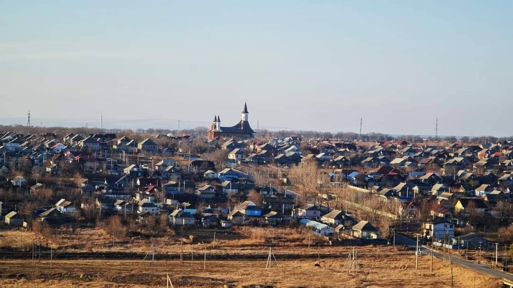

Despre comuna Cania
Cania este un sat în partea de sud-vest a Republicii Moldova, în Raionul Cantemir. Are o suprafață totală de 24,85 kilometri pătrați, fiind cuprinsă într-un perimetru de 31,88 km. Din componența comunei fac parte 2 localități: Iepureni și Cania (sat-reședință). În comuna Cania au fost înregistrate 1.073 de gospodării casnice în anul 2004. Membrii acestor gospodării alcătuiau 3.713 de persoane, iar mărimea medie a unei gospodării era de 3,5 persoane. Localitatea se află la distanța de 2 km de orașul Cantemir și la 118 km de Chișinău. Satul Cania a fost menționat documentar în anul 1794. Numele satului Cania provine de la o femeie pe nume Cana, care avea o cârciumă la care veneau mulți drumeți. Comuna Cania este situată pe râul Tigheci. În sat funcționează grădinița „Andrieș” și IP Gimnaziul „Ion Creangă”, în care învață elevi din satul Cania și Iepureni.
Curiozități
- Cania este localitatea de la care s-a dezvolatat orașul Cantemir în anii '70, fiind nod de legătură pentru căile de transport.
- Satul Cania este satul de baștină al interpretei Nelly Ciobanu.
- De asemenea din Cania s-au pornit în lumea mare și alte personalități precum:
- Rodica Ciobanu, actriță la teatul din Cahul, sora lui Nelly Ciobanu.
- Nadejda Herța, femeie de afaceri, proprietara restauranului „Capitoles Park” din Chişinău.
- Mihai Măciucă, fondatorul „EtnoVin”, ex-directorul fabricii de vinuri „Mileștii Mici”.
- Ion Zaharia, unul din cei mai mari flautişti basarabeni.
La 19 octombrie 2000, în comuna Cania, un sobor de preoți ai Mitropoliei Basarabiei a sfințit piatra de temelie a viitoarei biserici-mausoleu din localitate. Până în present lăcașul se află în construcție și este zidit în memoria celor 26 mii de ostași ai Armatei Romane căzuți în vara lui 1941, în bătălia de la Țiganca, Cahul, care au fost înhumați, în trei gropi comune: la Cania, la Iepureni și la Stoianovca.